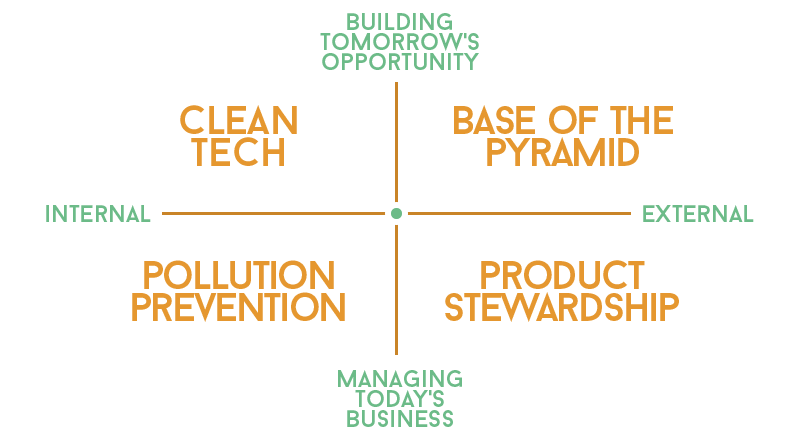

intro to Corporate Sustainability
Welcome to the ACSC team's short primer on Corporate Sustainability! Take the first steps to learn more about CS and its various frameworks. Upon learning more about this, we hope that you apply as a participant for ACSC 2019!
Corporate Sustainability Primer researched and written by Jm Gonzales, Julia Tamayo, Leeann Ponio, Katrina Cheong, Kim Chan, Azi de Luna, Timothy Olarte, Mikaela Chu, Edric Tanbonliong, and Yana Tan of the ACSC Recruitment & Secretariat Core Team, and Hazel Tan, Paul Co, and Kayle Amurao of the Management Engineering Association Sustainability Cluster.
What is Sustainability?
- Refers to the need to develop the sustainable models necessary for both the human race and planet Earth to survive.
- Sustainability is a balancing act. The United Nation’s 1987 Report of the World Commission on Environment and Development: Our Common Future noted that sustainable development meets the needs of the present without compromising the well-being of future generations.
- In 2000, the Earth Charter broadened the definition of sustainability to include the idea of a global society “founded on respect for nature, universal human rights, economic justice, and a culture of peace.”
What is the Sustainability Mindset?
- Constant Reevaluation This points to a continuous assessment of the individual’s impact towards the environment, society and economy. One must always keep in mind the consequences of their actions externally.
- Thinking Beyond Rather than just looking at the external impacts of their actions in the short-term, evaluation must be done even until the future. Sustainability is all about creating an environment that could provide for everyone, even in the long-term.
Why Sustainability?
- Sustainability ensures that decisions and processes made in the present would not comprises the needs of both the present and future generations.
- It looks into flourishing not just the economic development, but take into account the social and environmental aspects as well.
- In other words, sustainability integrates the three dimensions in making a community that is growing in numbers, and sustains the welfare of both the people and planet.
What is Corporate Sustainability?
- According to the Ivey Business Journal, Corporate Sustainability (CS) is an alternative to the traditional growth and profit maximization model. It recognizes that while corporate growth and profit is important, environmental and societal goals are also important for a corporation’s development.
- According to the UN Global Compact Guide to Corporate Sustainability, CS is a company’s delivery of long-term value in financial, environmental, social, and ethical terms.
5 pillars of cs
- Principled business Incorporating values and principles into their system and practices. This way, the company’s fundamental responsibilities are met in fields such as human rights, labor, environment, and anti-corruption.
- Strengthening society To empower and become one with society, by helping solve its biggest issues and enrich it in the process.
- Leadership commitment To understand and protect the organization's interests and sustainable mindset in both the present and future, whilst taking part in answering the world's biggest problems.
- Reporting progress Being transparent with investors and customers regarding an organization’s progress, and creating a discourse with society as a whole. Through this, a company is able to pinpoint problems and how to address them.
- Local action Each country has their own issues that need to be addressed. Business have the capability to address and respond to these issues.
corporate social responsibility
- Defined as the role of businesses to address social and environmental concerns through their operations and interactions with stakeholders
- While it follows the Triple Bottom Line Framework (People, Planet, Profit), it mainly focuses on the firm’s stakeholder interests.
CS vs. csr: what's the difference?
- Responsibility does not equate to sustainability.
- CSR projects usually focus on giving out solutions that quickly amend an issue (based on an ethical and moral standpoint), but can disregard underlying issues. These short-term successes can equate to long-term liabilities, compromising the ability to meet future needs.
- CSR focuses on solutions that confront immediate problems towards the society; Corporate sustainability looks at the long-term effects of the business’s actions in order to further integrate these into the framework--effectively producing a sustainable company.
Sustainability Frameworks
Circular Economy
- Circular Economy is an economic system of resource management that focuses on a cycle of reducing, reusing, and recycling. This system aims to reduce the resources used in creating everyday products by reducing and reusing raw materials from old products.
- Compared to the make, use, and dispose system of a Linear Economy, a Circular Economy aims to provide longevity for everyday products by promoting sustainable long-term use. This system highlights the use of biodegradable materials and the proper management of our finite resources.
Creating shared value
- The concept of creating shared value (CSV) goes beyond the parameters of a company’s own existence, competence, and competitiveness.
- Creating shared value means extending a company’s efforts to the development of the economic and social conditions of its stakeholders and communities that surround it.
- Environmental pertains to the manner by which a company acts as a developer and caretaker of nature and the environment rather than causing harm against it.
- Social extends to all of a company’s stakeholders including customers, employees, suppliers, and different communities involved; to ensure positive feedback within these relations.
- Governance points at a company’s leadership, internal control, and how it functions to meet or satisfy standards and obligations.
Sustainable value matrix

- Sustainable Value Matrix examines the relationship between the societal challenges of global sustainability and the creation of shareholder value.
- The goal of the framework is to be able to create “sustainable value” by identifying strategies and practices that could contribute to a more sustainable world while simultaneously driving shareholder value.
- The four quadrants of the matrix include:
- Population Prevention Minimizing waste and emissions from current facilities and operations
- Product Stewardship Mngaging stakeholders and managing the full life cycle of today’s products
- Clean Technology Developing and deploying “next-generation” clean technologies
- Base of the Pyramid Co-creating new businesses to serve the unmet needs of the poor and underserved
- The Sustainable Value Matrix is divided by the two axes: internal to external, and today to tomorrow. Companies can start focusing on internal aspects and how to manage their business today, then slowly build up to working on external aspects and tomorrow's opportunities.
- The positive impact of the four quadrants are as follows:
- Reduce cost and risk (pollution prevention)
- Enhance reputation and legitimacy (product stewardship)
- Accelerate innovation and repositioning (clean technology)
- Crystallize growth path and trajectory (base of the pyramid)
references
- Bansal, T. & DesJardine, M. (2015). Don't Confuse Sustainability and CSR. Ivey Business Journal. Retrieved from https://iveybusinessjournal.com/dont-confuse-sustainability-with-csr/
- Hart, S. (2011). Strategies for Sustainable Value. Retrieved from https://www.stuartlhart.com/sustainablevalue.html
- United Nations. (1987). Our Common Future: Report of the World Commission on Environment and Development. Retrieved from http://www.un-documents.net/our-common-future.pdf
- United Nations Global Compact. (2014). Guide to Corporate Sustainability. Retrieved from https://www.unglobalcompact.org/docs/publications/UN_Global_Compact_Guide_to_Corporate_Sustainability.pdf
- United Nations Industrial Development Organization. (n.d.). What is CSR? Retrieved from https://www.unido.org/our-focus/advancing-economic-competitiveness/competitive-trade-capacities-and-corporate-responsibility/corporate-social-responsibility-market-integration/what-csr
- Wilson, M. (2003). Corporate Sustainability: What is it and where does it come from? Ivey Business Journal. Retrieved from https://iveybusinessjournal.com/publication/corporate-sustainability-what-is-it-and-where-does-it-come-from/